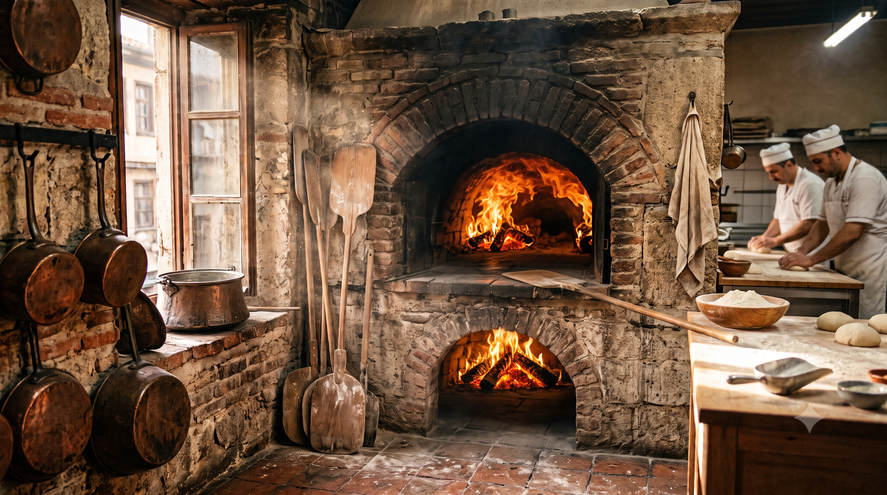
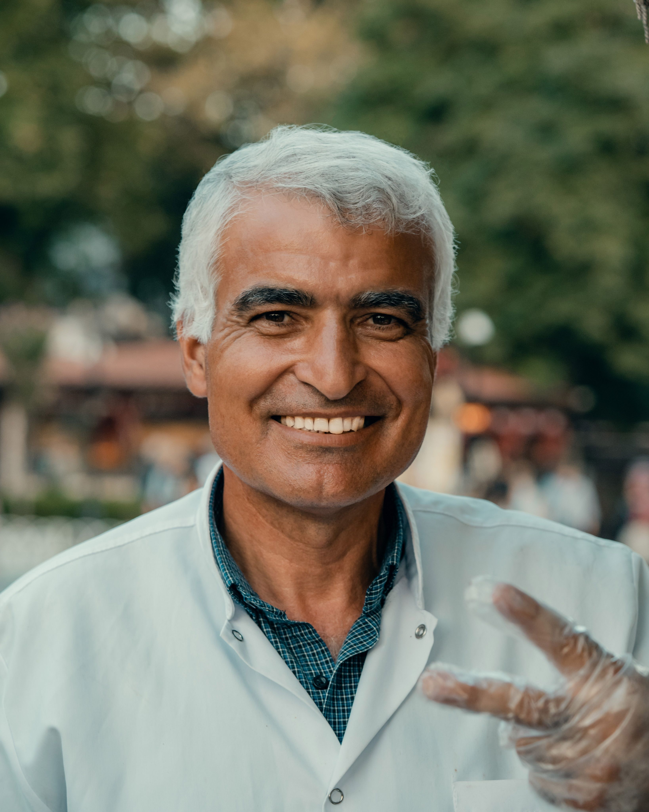
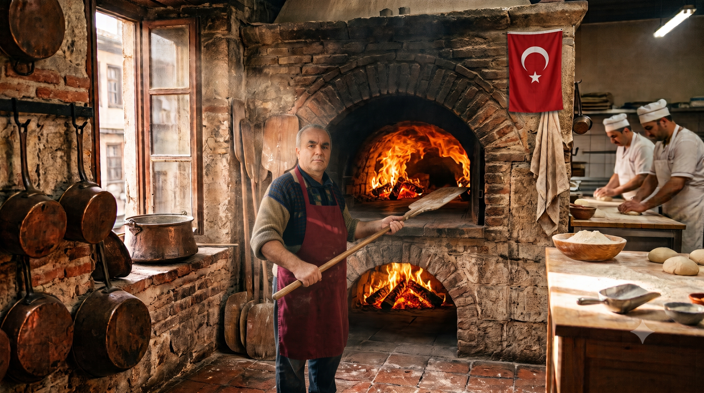
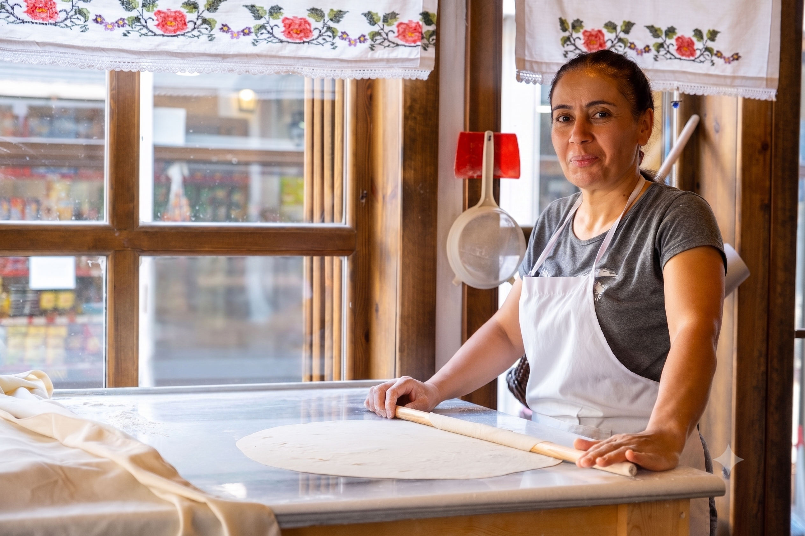

Geleneksel Mühürlü Lezzetlerin Asırlık Öyküsü
Lezzet Mührü, 1932 yılında Gaziantep'in tarihi külliyeleri arasında küçük bir taş fırın dükkanı olarak lezzet yolculuğuna başladı. Kurucumuz Hacı Ahmet Usta'nın "Lezzet önce dürüstlükle pişer" ilkesiyle yola çıkan restoranımız, kuşaktan kuşağa aktarılan reçeteleriyle Türk mutfağının asırlık mirasını günümüze taşıyor.
Meşe odununun kor ateşinde pişen ızgaralarımız, el açması incecik yufkalardan süzülen pide ve lahmacunlarımız ile sadece karın doyurmayı değil, unutulmaya yüz tutmuş damak kültürünü yaşatmayı hedefliyoruz.
Her gün gün ağarırken yöresinden özel olarak seçilen taze malzemeler, ustalarımızın yıllara dayanan maharetiyle buluşuyor. Bizim için her tabak, sofranıza sunulan asırlık bir gelenek ve damaklarda bırakılan bir lezzet mührüdür.

Vazgeçilmez İlkelerimiz
Asırlık lezzet sırrımızın arkasındaki 3 temel sütun
Yerel ve Taze Malzeme
Etlerimizden baharatlarımıza kadar tüm ürünlerimizi doğrudan yöresindeki yerel üreticilerden günlük ve taze olarak temin ediyoruz.
Geleneksel Pişirme
Elektrikli veya gazlı ocaklar yerine, etlerimizin lezzetini mühürleyen meşe odunu ateşi ve taş fırın geleneğinden asla taviz vermiyoruz.
Kuşaksız Misafirperverlik
Restoranımıza adım atan her misafirimizi evimize gelen bir dost gibi ağırlıyor, 1932'den beri süregelen esnaf samimiyetini yaşatıyoruz.
Mutfaktaki Ustalarımız
Geleneksel Lezzetlerimize ruhunu katan deneyimli ekibimiz

Ahmet Yılmaz
Başaşçı & Izgara Ustası35 Yıllık kebap ve ızgara tecrübesiyle mutfağımızın lezzet mimarı.

Mehmet Demir
Pide & Taş Fırın UstasıGeleneksel taş fırın lezzetleri ve hamur işlerinin duayen ustası

Sevim Kaya
Geleneksel Tatlı ŞefiAsırlık ev baklavaları ve şerbetli tatlıların maharetli el izi
Çalışma Saatlerimiz
Sizlere en taze lezzetlerimizi sunabilmek için kapılarımızın açık olduğu saatler
| Gün | Mutfak Açılışı | Mutfak Kapanışı | Durum |
|---|---|---|---|
| Pazartesi | 10:00 | 22:00 | Açık |
| Salı | 10:00 | 22:00 | Açık |
| Çarşamba | 10:00 | 22:00 | Açık |
| Perşembe | 10:00 | 22:00 | Açık |
| Cuma | 10:00 | 23:00 | Açık (Yoğun Mesai) |
| Cumartesi | 10:00 | 23:00 | Hafta Sonu Servisi |
| Pazar | - | - | Kapalı |